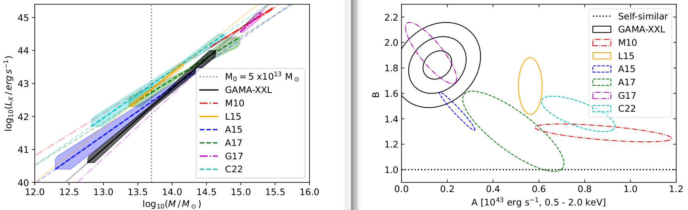

This page is under construction
Galaxy Clusters
Galaxy clusters are the largest gravitationally bound structures in the universe. Galaxy clusters comprise tens to thousands of galaxies plus an X-ray emitting intra-cluster medium (ICM) bound by a dark-matter-dominated gravitational potential well. My research involves the statistical analysis of galaxy clusters using optical and X-ray detection methods.

IMAGE CREDIT: ESA/XMM-Newton/SDSS/J. Sanders et al. 2019
Scaling relations
Assuming galaxy groups form solely through gravitational mergers it is expected that all clusters should be scaled versions of each other. The assumption of a self-similar model Kaiser (1986) predicts power-law scaling relations between cluster properties such as luminosity, temperature and mass. When measured observationally, these scaling relations are generally found to differ from self similar expectations. This is most prominent for low mass systems, while some studies of high mass clusters do find self-similar behaviour in some scaling relations. The departures from self-similarity are most noticeable for the relations which are dependant on density and distribution of ICM (e.g. luminosity, gas mass). These properties are found to show steeper correlation with mass and temperature than expected. This behaviour is broadly understood to be a result of non-gravitational processes that are ignored by the self-similar model. These processes (e.g., active galactic nuclei (AGN) feedback, cooling, star formation, supernovae) are expected to disproportionately affect the properties of the ICM in lower mass systems where the gravitational potential well is shallower.
